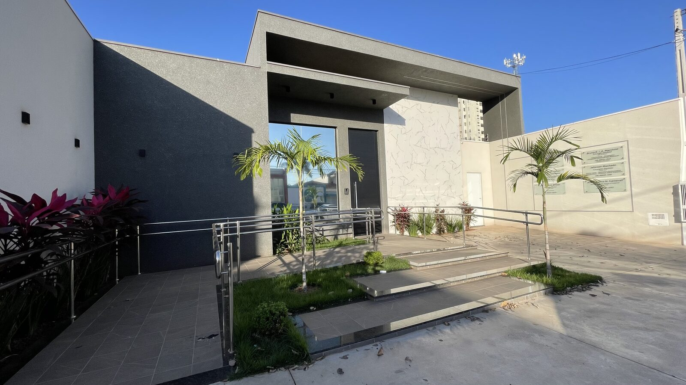

Dra. Mariana
Furuse
Cirurgiã-Dentista • FOA UNESP • CROSP 176030
Atendimento odontológico focado na sua saúde, prevenção e longevidade do sorriso.
Atenção aos detalhes, acolhimento e escuta atenta em Araçatuba – SP. Especialista em clínico geral, canal (urgências), limpeza, clareamento, placas de bruxismo e protetores esportivos sob medida.
Primeira Consulta com valor R$125 abatido ao realizar qualquer tratamento na clínica em até 15 dias!

Consulta (Valor Abatido)
R$ 125
Raio X Digital
Na Hora
Atendimento de Urgências
Como funciona a sua Primeira Consulta
Um atendimento calmo, atencioso e transparente para entender suas necessidades e cuidar da sua saúde bucal com máxima dedicação.
Exame Completo e Individualizado
“Na primeira consulta, é realizado um exame clínico completo e individualizado da sua saúde bucal. É feita a avaliação criteriosa da sua queixa principal, identificação das causas e elaboração de um plano de tratamento personalizado com clareza e transparência. Exames anteriores podem ser apresentados para análise diagnóstica. Havendo urgência odontológica, a clínica dispõe de tecnologia de Raio X digital instantâneo. Para aprimoramento da higiene diária, o paciente também pode trazer sua escova de dentes para orientações personalizadas de escovação.”
- Traga seus exames prévios se possuir
- Orientações com sua própria escova de dentes
- Sensor de Raio X Digital na própria clínica
Investimento da Consulta
R$ 125,00
100% Abatido
Este valor é 100% abatido ao realizar qualquer tratamento na clínica (válido por 15 dias após a consulta).
Tecnologia e Conforto para Você
Sensor de Raio X Digital
Imagens radiográficas instantâneas no computador, sem tempo de espera para um diagnóstico rápido e seguro.
Escaneamento Digital
Mapeamento tridimensional da boca com máxima precisão, sem a necessidade das moldagens desconfortáveis tradicionais.
Cadeira com Esteira de Massagem
Experiência de atendimento relaxante com esteira de massagem integrada na cadeira odontológica.
Casos Clínicos, Serviços e Resultados
Conheça os procedimentos oferecidos pela Dra. Mariana Furuse em Araçatuba – SP. Arraste o divisor interativo abaixo para comparar o Antes e Depois real dos tratamentos.
Comparador Interativo Antes & Depois
Clareamento Dental Supervisionado

 Antes
Depois
Antes
Depois
* Arraste a linha vertical branca no centro da imagem para comparar os resultados do tratamento. Fotos reais de pacientes da clínica, cedidas para fins ilustrativos. Resultados podem variar de paciente para paciente.
* Atendimento Odontológico Ético e Personalizado — Cada ser humano possui características anatômicas únicas. Os tratamentos são planejados individualmente na consulta inicial.
Como funciona seu atendimento na clínica
Uma trajetória clara, previsível e sem sobressaltos do primeiro contato à manutenção do seu sorriso.
Agendamento simples e rápido.
Contato no WhatsApp
Clique no botão e fale direto com nossa equipe para agendar seu horário de acordo com sua rotina.
Investimento de R$ 125,00 (abatido em até 15 dias).
Primeira Consulta Detalhada
Exame completo e individualizado da sua saúde bucal. Analisamos sua queixa principal, seus exames prévios e tiramos suas dúvidas.
Sem pressa e sem procedimentos desnecessários.
Planejamento Claro e Transparente
Apresentamos o melhor plano de tratamento com calma, clareza e soluções personalizadas para o seu bem-estar.
Experiência acolhedora e delicada.
Conforto e Tecnologia
Sua sessão é realizada na cadeira com esteira de massagem, com tecnologia de Raio X digital instantâneo ou escaneamento.
Suporte e cuidado contínuo.
Sorriso e Acompanhamento
Instruções cuidadosas de higiene e programa preventivo para garantir a longevidade dos seus dentes.
O que dizem os pacientes da Dra. Mariana Furuse
A satisfação, o conforto e a transformação de vidas através do sorriso são o nosso maior orgulho.
“Excelente profissional! A Mari é muito atenciosa, cuidadosa e transmite muita segurança. Atendimento impecável desde a recepção até o procedimento. Me senti super bem acolhida e o resultado ficou maravilhoso. Recomendo de olhos fechados!”
Camila Vieira
Avaliação no Google
“Super atenciosa, detalhista, e excelente profissional que indico desde uma avaliação geral até procedimentos mais complexos.”
Rubens Milaré · Local Guide no Google
“Atendimento nota 10! A Dra. Mariana é extremamente atenciosa, cuidadosa e muito profissional. Dá para perceber o quanto ela ama o que faz e preza pela excelência.”
Jocelene Alves Santos · Avaliação no Google
“Ótima profissional! Meu tratamento para bruxismo trouxe uma grande melhora na minha qualidade de vida. Muito atenciosa, competente e clara nas explicações.”
Gabriela Gomes · Avaliação no Google


Dra. Mariana
CROSP 176030
“Atenção aos detalhes, cuidado e acolhimento em primeiro lugar. Com profunda empatia por cada paciente, busco resolver suas necessidades através de um planejamento preciso e personalizado. Acima de tudo, só ofereço e proponho o tratamento que eu estaria disposta a realizar em mim mesma se estivesse no seu lugar.”
— Dra. Mariana Furuse
Acolhimento, Respeito e Excelência Odontológica
A Dra. Mariana Furuse atua em Araçatuba–SP com uma odontologia leve, humana e voltada para a saúde e bem-estar do paciente. Seu foco é oferecer o melhor planejamento possível, priorizando a prevenção, o alívio de dores, a longevidade e a estética natural do sorriso.
No Dia a Dia da Clínica
Bastidores do Atendimento


Formação e Especializações Acadêmicas
FOA UNESP Araçatuba
Cirurgiã-Dentista formada pela conceituada Faculdade de Odontologia de Araçatuba (FOA UNESP).
Atualização em Endodontia (Canal)
Aperfeiçoamento em Tratamento de Canal pelo INSPE CURSOS com a Profª Juliana Quitino Trizzi.
Imersão em DTM, Bruxismo e Placas Oclusais
Especialização em Fluxo Clínico de DTM e Placas de Bruxismo com Profº Paulo Conti (FOB USP Bauru).
Protetor Bucal Esportivo Personalizado
Capacitação teórico-prática na confecção artesanal sob medida com Profº Eli Namba (Sports Dental).
Comunidade Dentista PRO
Membro da Comunidade Dentista PRO do Profº Paulo Vinícius Soares para alta performance em odontologia.
Atendimento com Horário Marcado
R. Fernando Costa, 223 - Bairro das Bandeiras, Araçatuba - SP
Perguntas Frequentes (FAQ)
Transparência em cada etapa. Confira as respostas para as dúvidas mais comuns dos nossos pacientes.
Não encontrou sua dúvida?
Nossa equipe está disponível no WhatsApp para ajudar você pessoalmente.
Falar no WhatsAppSeu sorriso merece um cuidado especial.
Agende sua avaliação com a Dra. Mariana Furuse e viva a experiência de um atendimento verdadeiramente acolhedor, transparente e com tecnologia de ponta.
Agendar pelo WhatsAppDra. Mariana Furuse • FOA UNESP • CROSP 176030
Estamos à sua disposição em Araçatuba
Agende seu atendimento com antecedência para desfrutar de uma consulta privativa, pontual e exclusiva na R. Fernando Costa, 223 - Bairro das Bandeiras, Araçatuba - SP.
Agendamento Direto
Agende seu Atendimento em Araçatuba
Preencha os dados abaixo para iniciar seu contato direto via WhatsApp com a Dra. Mariana Furuse.